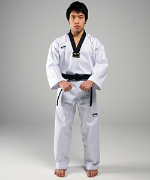

Ready Stance Arm Placement

Similar to the Parallel Stance, in a Ready stance, the arms are slightly bent with loosely held fists about one fist-size apart just below the navel. Muscles are relaxed to promote movement speed from this position. This stance and its variants are most often used at the start of poomsae (forms).
If you want more explanation, press it!
At the outset of most poomsae (forms) one starts from the Attention Stance and from there transitions first into the Ready Stance. Different schools use different transitions to get to the Ready Stance. In Kukkiwon/WTF Taekwondo, step left with the left foot while simultaneously bringing your open hands from your sides to your front, now down by your navel, palms facing each other. Raise the open hands to the sternum, then close them into fists, and lower them back down to the navel. All of that should be done slowly to a silent eight count. The premise of the transition is that your open hands are lifting your body's energy from the center at your navel up to your chest, in preparation for the upcoming poomsae.